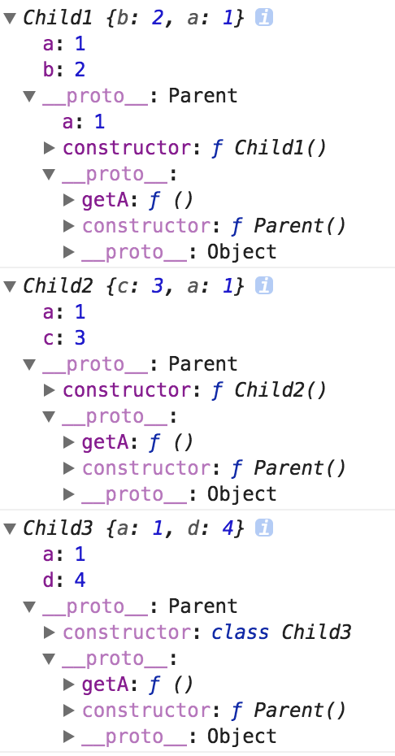

<!DOCTYPE html>
<html>
<head><meta name="generator" content="Hexo 3.9.0">
  <meta charset="utf-8">
  <link rel="manifest" href="manifest.json">
  
  <title>javascript继承方式对比 | Hello, I am Marx</title>
  <meta name="baidu-site-verification" content="fwLK28VV6P">
  <meta name="viewport" content="width=device-width, initial-scale=1, maximum-scale=1">
  <meta name="description" content="本文对比三种常用的js继承方式。组合式继承、原型式继承和ES6中class的extends。对比方式简单粗暴，写出这几种继承，之后看继承后的类的实例。">
<meta property="og:type" content="article">
<meta property="og:title" content="javascript继承方式对比">
<meta property="og:url" content="https://marxjiao.com/2018/03/16/js-extends/index.html">
<meta property="og:site_name" content="Hello, I am Marx">
<meta property="og:description" content="本文对比三种常用的js继承方式。组合式继承、原型式继承和ES6中class的extends。对比方式简单粗暴，写出这几种继承，之后看继承后的类的实例。">
<meta property="og:locale" content="zh-CN">
<meta property="og:image" content="https://marxjiao.com/2018/03/16/js-extends/result.png">
<meta property="og:updated_time" content="2020-08-04T09:34:02.379Z">
<meta name="twitter:card" content="summary">
<meta name="twitter:title" content="javascript继承方式对比">
<meta name="twitter:description" content="本文对比三种常用的js继承方式。组合式继承、原型式继承和ES6中class的extends。对比方式简单粗暴，写出这几种继承，之后看继承后的类的实例。">
<meta name="twitter:image" content="https://marxjiao.com/2018/03/16/js-extends/result.png">
  
  
    <link rel="icon" href="/favicon.png">
  
  
    <link href="//fonts.googleapis.com/css?family=Source+Code+Pro" rel="stylesheet" type="text/css">
  
  <link rel="stylesheet" href="/css/style.css">
  

  <script>
  var _hmt = _hmt || [];
  (function() {
    var hm = document.createElement("script");
    hm.src = "https://hm.baidu.com/hm.js?f2aece70f9b4d1eb644623e3ddf0dfe1";
    var s = document.getElementsByTagName("script")[0]; 
    s.parentNode.insertBefore(hm, s);
  })();
  </script>
  </head></html>
<body>
  <div id="container">
    <div id="wrap">
      <header id="header">
  <div id="banner"></div>
  <div id="header-outer" class="outer">
    <div id="header-title" class="inner">
      <h1 id="logo-wrap">
        <a href="/" id="logo">Hello, I am Marx</a>
      </h1>
      
        <h2 id="subtitle-wrap">
          <a href="/" id="subtitle">Technology is to the left, art is to the right. But unfortunately I can not divide them.</a>
        </h2>
      
    </div>
    <div id="header-inner" class="inner">
      <nav id="main-nav">
        <a id="main-nav-toggle" class="nav-icon"></a>
        
          <a class="main-nav-link" href="/">Home</a>
        
          <a class="main-nav-link" href="/archives">Archives</a>
        
          <a class="main-nav-link" href="/projects">Projects</a>
        
      </nav>
      <nav id="sub-nav">
        
        
      </nav>
      
    </div>
  </div>
</header>
      <div class="outer">
        <section id="main"><article id="post-js-extends" class="article article-type-post" itemscope itemprop="blogPost">
  <div class="article-meta">
    <a href="/2018/03/16/js-extends/" class="article-date">
  <time datetime="2018-03-16T07:12:42.000Z" itemprop="datePublished">2018-03-16</time>
</a>
    
  </div>
  <div class="article-inner">
    
    
      <header class="article-header">
        
  
    <h1 class="article-title" itemprop="name">
      javascript继承方式对比
    </h1>
  

      </header>
    
    <div class="article-entry" itemprop="articleBody">
      
        <p>本文对比三种常用的js继承方式。组合式继承、原型式继承和ES6中class的<code>extends</code>。对比方式简单粗暴，写出这几种继承，之后看继承后的类的实例。</p>
<a id="more"></a>

<h2 id="代码"><a href="#代码" class="headerlink" title="代码"></a>代码</h2><p>直接上代码：</p>
<figure class="highlight javascript"><table><tr><td class="gutter"><pre><span class="line">1</span><br><span class="line">2</span><br><span class="line">3</span><br><span class="line">4</span><br><span class="line">5</span><br><span class="line">6</span><br><span class="line">7</span><br><span class="line">8</span><br><span class="line">9</span><br><span class="line">10</span><br><span class="line">11</span><br><span class="line">12</span><br><span class="line">13</span><br><span class="line">14</span><br><span class="line">15</span><br><span class="line">16</span><br><span class="line">17</span><br><span class="line">18</span><br><span class="line">19</span><br><span class="line">20</span><br><span class="line">21</span><br><span class="line">22</span><br><span class="line">23</span><br><span class="line">24</span><br><span class="line">25</span><br><span class="line">26</span><br><span class="line">27</span><br><span class="line">28</span><br><span class="line">29</span><br><span class="line">30</span><br><span class="line">31</span><br><span class="line">32</span><br><span class="line">33</span><br><span class="line">34</span><br><span class="line">35</span><br><span class="line">36</span><br><span class="line">37</span><br><span class="line">38</span><br></pre></td><td class="code"><pre><span class="line"><span class="comment">// 基类</span></span><br><span class="line"><span class="function"><span class="keyword">function</span> <span class="title">Parent</span>(<span class="params"></span>) </span>&#123;</span><br><span class="line">    <span class="keyword">this</span>.a = <span class="number">1</span>;</span><br><span class="line">&#125;</span><br><span class="line">Parent.prototype.getA = <span class="function"><span class="keyword">function</span> (<span class="params"></span>) </span>&#123;</span><br><span class="line">    <span class="built_in">console</span>.log(<span class="keyword">this</span>.a);</span><br><span class="line">    <span class="keyword">return</span> <span class="keyword">this</span>.a;</span><br><span class="line">&#125;</span><br><span class="line"></span><br><span class="line"><span class="comment">// 组合式继承</span></span><br><span class="line"><span class="function"><span class="keyword">function</span> <span class="title">Child1</span>(<span class="params"></span>) </span>&#123;</span><br><span class="line">    <span class="keyword">this</span>.b = <span class="number">2</span>;</span><br><span class="line">    <span class="comment">// 先借用构造函数</span></span><br><span class="line">    Parent.call(<span class="keyword">this</span>);</span><br><span class="line">&#125;</span><br><span class="line">Child1.prototype = <span class="keyword">new</span> Parent();</span><br><span class="line">Child1.prototype.constructor = Child1;</span><br><span class="line"></span><br><span class="line"><span class="comment">// 原型式继承</span></span><br><span class="line"><span class="function"><span class="keyword">function</span> <span class="title">Child2</span>(<span class="params"></span>) </span>&#123;</span><br><span class="line">    <span class="keyword">this</span>.c = <span class="number">3</span>;</span><br><span class="line">    <span class="comment">// 先借用构造函数</span></span><br><span class="line">    Parent.call(<span class="keyword">this</span>);</span><br><span class="line">&#125;</span><br><span class="line">Child2.prototype = <span class="built_in">Object</span>.create(Parent.prototype);</span><br><span class="line">Child2.prototype.constructor = Child2;</span><br><span class="line"></span><br><span class="line"><span class="comment">// es6继承</span></span><br><span class="line"><span class="class"><span class="keyword">class</span> <span class="title">Child3</span> <span class="keyword">extends</span> <span class="title">Parent</span> </span>&#123;</span><br><span class="line">    <span class="keyword">constructor</span> () &#123;</span><br><span class="line">        <span class="keyword">super</span>(Parent)</span><br><span class="line">        <span class="keyword">this</span>.d = <span class="number">4</span>;</span><br><span class="line">    &#125;</span><br><span class="line">&#125;</span><br><span class="line"></span><br><span class="line"><span class="built_in">console</span>.log(<span class="keyword">new</span> Child1());</span><br><span class="line"><span class="built_in">console</span>.log(<span class="keyword">new</span> Child2());</span><br><span class="line"><span class="built_in">console</span>.log(<span class="keyword">new</span> Child3());</span><br></pre></td></tr></table></figure>

<h2 id="运行结果："><a href="#运行结果：" class="headerlink" title="运行结果："></a>运行结果：</h2><p></p>
<h2 id="总结"><a href="#总结" class="headerlink" title="总结"></a>总结</h2><p>可以看到组合式继承和原型式继承最主要的区别是组合式继承的子类原型上有父类构造函数中的属性。原型式继承和es6的extends继承方式基本没什么差别，只是constructor类型一个是函数，一个是class。</p>

      
    </div>
    <footer class="article-footer">
      <a data-url="https://marxjiao.com/2018/03/16/js-extends/" data-id="ckdfqxh2d00062gon6o1mj2v5" class="article-share-link">分享</a>
      
      
    </footer>
  </div>
  
    
<nav id="article-nav">
  
    <a href="/2018/04/10/node-webpack/" id="article-nav-newer" class="article-nav-link-wrap">
      <strong class="article-nav-caption">上一篇</strong>
      <div class="article-nav-title">
        
          使用webpack搭建基于typescript的node开发环境
        
      </div>
    </a>
  
  
    <a href="/2017/12/19/vuex-source-code-reading-md/" id="article-nav-older" class="article-nav-link-wrap">
      <strong class="article-nav-caption">下一篇</strong>
      <div class="article-nav-title">Vuex源码阅读</div>
    </a>
  
</nav>

  
</article>

</section>
        
          <aside id="sidebar">
  
    

  
    
  <div class="widget-wrap">
    <h3 class="widget-title">标签</h3>
    <div class="widget">
      <ul class="tag-list"><li class="tag-list-item"><a class="tag-list-link" href="/tags/Cloud/">Cloud</a></li><li class="tag-list-item"><a class="tag-list-link" href="/tags/Docker/">Docker</a></li><li class="tag-list-item"><a class="tag-list-link" href="/tags/Life/">Life</a></li><li class="tag-list-item"><a class="tag-list-link" href="/tags/angular/">angular</a></li><li class="tag-list-item"><a class="tag-list-link" href="/tags/flex-layout/">flex-layout</a></li><li class="tag-list-item"><a class="tag-list-link" href="/tags/hexo/">hexo</a></li><li class="tag-list-item"><a class="tag-list-link" href="/tags/material/">material</a></li><li class="tag-list-item"><a class="tag-list-link" href="/tags/mock/">mock</a></li><li class="tag-list-item"><a class="tag-list-link" href="/tags/node/">node</a></li><li class="tag-list-item"><a class="tag-list-link" href="/tags/react/">react</a></li><li class="tag-list-item"><a class="tag-list-link" href="/tags/typescript/">typescript</a></li><li class="tag-list-item"><a class="tag-list-link" href="/tags/webpack/">webpack</a></li><li class="tag-list-item"><a class="tag-list-link" href="/tags/webpack-plugin/">webpack plugin</a></li><li class="tag-list-item"><a class="tag-list-link" href="/tags/小程序/">小程序</a></li></ul>
    </div>
  </div>


  
    
  <div class="widget-wrap">
    <h3 class="widget-title">标签云</h3>
    <div class="widget tagcloud">
      <a href="/tags/Cloud/" style="font-size: 10px;">Cloud</a> <a href="/tags/Docker/" style="font-size: 10px;">Docker</a> <a href="/tags/Life/" style="font-size: 10px;">Life</a> <a href="/tags/angular/" style="font-size: 10px;">angular</a> <a href="/tags/flex-layout/" style="font-size: 10px;">flex-layout</a> <a href="/tags/hexo/" style="font-size: 10px;">hexo</a> <a href="/tags/material/" style="font-size: 10px;">material</a> <a href="/tags/mock/" style="font-size: 10px;">mock</a> <a href="/tags/node/" style="font-size: 10px;">node</a> <a href="/tags/react/" style="font-size: 20px;">react</a> <a href="/tags/typescript/" style="font-size: 10px;">typescript</a> <a href="/tags/webpack/" style="font-size: 20px;">webpack</a> <a href="/tags/webpack-plugin/" style="font-size: 10px;">webpack plugin</a> <a href="/tags/小程序/" style="font-size: 10px;">小程序</a>
    </div>
  </div>

  
    
  <div class="widget-wrap">
    <h3 class="widget-title">归档</h3>
    <div class="widget">
      <ul class="archive-list"><li class="archive-list-item"><a class="archive-list-link" href="/archives/2019/11/">十一月 2019</a></li><li class="archive-list-item"><a class="archive-list-link" href="/archives/2019/04/">四月 2019</a></li><li class="archive-list-item"><a class="archive-list-link" href="/archives/2018/08/">八月 2018</a></li><li class="archive-list-item"><a class="archive-list-link" href="/archives/2018/04/">四月 2018</a></li><li class="archive-list-item"><a class="archive-list-link" href="/archives/2018/03/">三月 2018</a></li><li class="archive-list-item"><a class="archive-list-link" href="/archives/2017/12/">十二月 2017</a></li><li class="archive-list-item"><a class="archive-list-link" href="/archives/2017/08/">八月 2017</a></li><li class="archive-list-item"><a class="archive-list-link" href="/archives/2017/06/">六月 2017</a></li><li class="archive-list-item"><a class="archive-list-link" href="/archives/2017/05/">五月 2017</a></li><li class="archive-list-item"><a class="archive-list-link" href="/archives/2017/03/">三月 2017</a></li><li class="archive-list-item"><a class="archive-list-link" href="/archives/2017/02/">二月 2017</a></li><li class="archive-list-item"><a class="archive-list-link" href="/archives/2017/01/">一月 2017</a></li></ul>
    </div>
  </div>


  
    
  <div class="widget-wrap">
    <h3 class="widget-title">最新文章</h3>
    <div class="widget">
      <ul>
        
          <li>
            <a href="/2019/11/03/qnap-docker/">在威联通 NAS 上使用 Docker</a>
          </li>
        
          <li>
            <a href="/2019/04/02/your-beauty-value/">使用小程序云开发和百度云 AI 接口做了一个颜值测量小程序</a>
          </li>
        
          <li>
            <a href="/2018/08/26/puppeteer-install/">手动下载 Chrome，解决 puppeteer 无法使用问题</a>
          </li>
        
          <li>
            <a href="/2018/04/10/node-webpack/">使用webpack搭建基于typescript的node开发环境</a>
          </li>
        
          <li>
            <a href="/2018/03/16/js-extends/">javascript继承方式对比</a>
          </li>
        
      </ul>
    </div>
  </div>

  
</aside>
<!-- ad1 -->
<ins class="adsbygoogle"
style="display:block"
data-ad-client="ca-pub-2718852572240859"
data-ad-slot="4184044363"
data-ad-format="auto"
data-full-width-responsive="true"></ins>
<script>
(adsbygoogle = window.adsbygoogle || []).push({});
</script>
        
      </div>
      <footer id="footer">
  
  <div class="outer">
    <div id="footer-info" class="inner">
      &copy; 2020 Marx<br>
      Powered by <a href="http://hexo.io/" target="_blank">Hexo</a>
    </div>
  </div>
</footer>
    </div>
    <nav id="mobile-nav">
  
    <a href="/" class="mobile-nav-link">Home</a>
  
    <a href="/archives" class="mobile-nav-link">Archives</a>
  
    <a href="/projects" class="mobile-nav-link">Projects</a>
  
</nav>
    

<script src="//ajax.googleapis.com/ajax/libs/jquery/2.0.3/jquery.min.js"></script>


  <link rel="stylesheet" href="/fancybox/jquery.fancybox.css">
  <script src="/fancybox/jquery.fancybox.pack.js"></script>


<script src="/js/script.js"></script>

  </div>
  <script>
  if('serviceWorker' in navigator) {
  navigator.serviceWorker
        .register('/sw.js')
        .then(function() { console.log("Service Worker Registered"); });
  }
  </script>
</body>
</html>